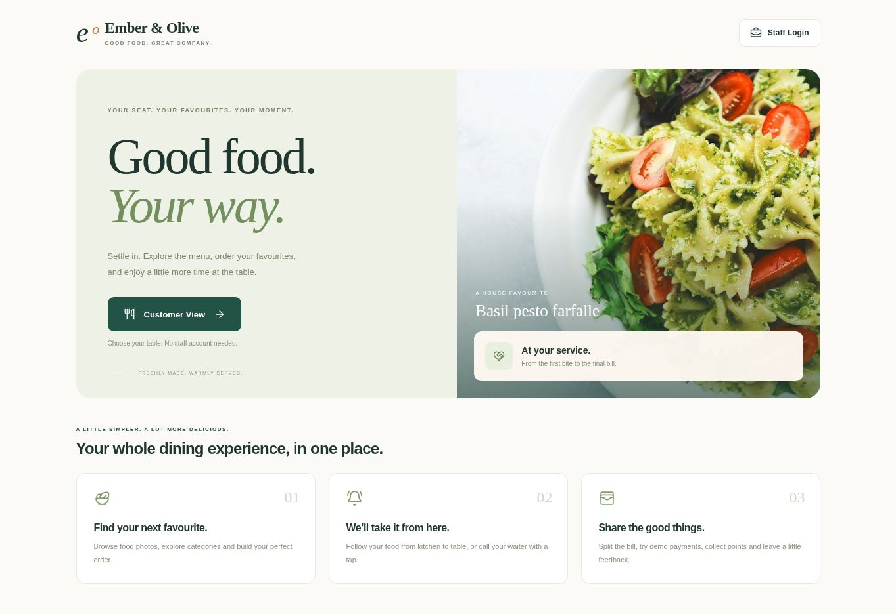
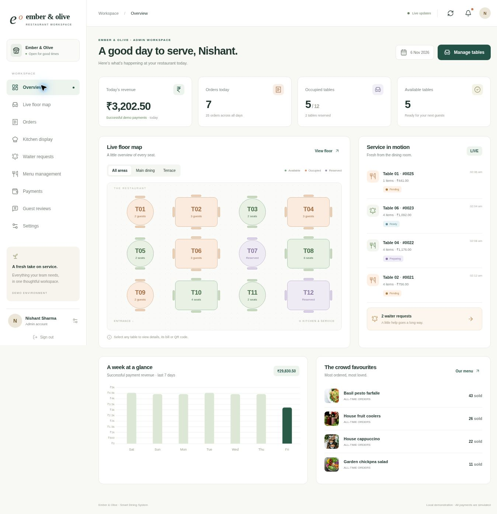

Your restaurant.
Ready to come to life.
This folder contains the complete working Flask project: frontend, backend, SQLite database, sample data, tests and images. This file is the setup guide. The application itself runs through Python.
1. Open the folder in VS Code
- Install Python 3.12 or 3.13 from python.org and VS Code for your Mac.
- Extract the ZIP and open the Smart_Restaurant folder in VS Code: File → Open Folder.
- Choose Terminal → New Terminal. You should be in the folder containing
app.py.
2. Run these commands, one at a time
python3 -m venv .venv
source .venv/bin/activate
python -m pip install -r requirements.txt
python init_db.py
python app.pyKeep the terminal open. The first installation requires Internet; the app itself uses bundled assets.
3. Open your restaurant
In your browser, open http://127.0.0.1:5001.
Customer: click Customer View → Table 01 → View menu → Start dining. No staff login is required. You can also open the customer page directly.
Restaurant staff: click Staff Login and use an account below.
| Role | Username | Password |
|---|---|---|
| Admin | admin | Admin@12345 |
| Waiter | waiter | Waiter@12345 |
| Kitchen | kitchen | Kitchen@12345 |
4. Try a complete dining session
- Open the homepage in an incognito window. Click Customer View, choose Table 01 and click View menu.
- Click Start dining and enter your name/group size. Add food, open the cart and place the order.
- In your normal browser window, open Staff Login and sign in as admin.
- In the kitchen board, move the order from Pending to Preparing to Ready. A waiter/admin marks it Served.
- In the customer’s Bill & pay tab, split the bill and simulate payments.
- View the final receipt. Once served and fully paid, staff closes the table for the next guests.
HOST=0.0.0.0 python app.py. In Admin Settings set QR base URL to your Mac’s Wi-Fi IP, for example http://192.168.1.20:5001, then print fresh QR codes. The default localhost QR codes are for the Mac only.5. Next time
source .venv/bin/activate
python app.pyStop the app with Control+C. For full step-by-step module instructions, troubleshooting, backups and MySQL notes, read README.md in VS Code. Press Command+Shift+V to preview the Markdown file.
To run the automated tests: python -m pytest tests -q.
Your customer experience

Customer View opens the table picker; scanning a table QR opens its menu directly.
Inside your workspace

The screenshots show demonstration and test data. Your initial sample totals may differ. All payments are simulated; no real money is processed. The project was tested on Linux/Python 3.12 and Chromium, with Mac instructions provided.